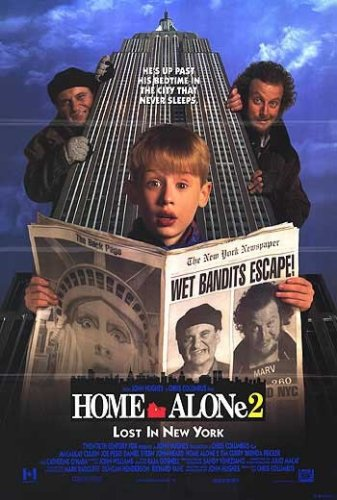

Esqueceram de Mim 2: Perdido em Nova York (1992)

Diretor: Chris Columbus
Atores: Macaulay Culkin, Joe Pesci, Daniel Stern, John Heard, Tim Curry, Brenda Fricker e Catherine O'Hara
Gênero: Comédia
Censura: Indicação Livre
Duração: 120 minutos
Sinopse: Kevin (Macaulay Culkin) se vê novamente sozinho, quando em virtude de uma confusão no aeroporto que fez com que ele ao invés de embarcar com a família para a Flórida partisse sozinho para Nova York. Mas como tinha o cartão de crédito do pai (John Heard), ele se hospeda no melhor hotel da cidade, mas também encontra os dois ladrões que tinha enfrentado no passado e que agora planejam se vingar dele.